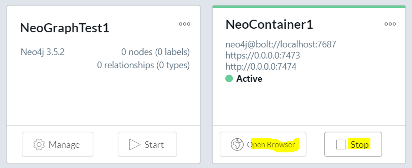

Neo4j on Windows
Posted on May 08, 2019 in DevOp Updated: May 08, 2019
Time for me to play with Neo4j. I have a project, where a graph DB makes most sense. In this blog I'll install Neo4j on Windows.
First I'll install a docker version. It might come handy in deployment case.
Next I'll install a Desktop version to get a GUI both for management, but mostly for a data editing interface.
Neo4j - editions
So what is out there to install?
On the Neo4j Download page you have options to download
- two server versions,
- Enterprise or
- Community. You also have option of downloading
- a Desktop version with a GUI included.
- A Cypher CLI is a separate install.
Neo4j KB article talks about CLIs. There you find a handy script for a Neo4j docker container.
From the the download page I'll grap
- Neo4j Desktop
- SDK for JavaScript and possibly some plugins
From the KB article I'll grap the Neo4j Docker script and modify it a bit.
Install Docker Container edition
From Neo4j KB article you'll find this script:
# Script from https://neo4j.com/developer/kb/using-neo4j-shell-neo4j-ce-3x/
docker pull neo4j
CONTAINER=$(docker run -d --name neo4j -p 7474:7474 -v /path/to/data:/data -v /path/to/csv-files:/var/lib/neo4j/import neo4j)
echo "Running Neo4j as $CONTAINER, waiting for startup"
sleep 10
# to import a file from `/path/to/csv-files/import.cypher`
docker exec $CONTAINER /var/lib/neo4j/bin/neo4j-shell -f /var/lib/neo4j/import/import.cypher
# or for interactive mode
docker exec -ti $CONTAINER /var/lib/neo4j/bin/neo4j-shell
Here is what I modified it to on Windows:
From CMD: (Run as admin)
# Set envir for Neo4j database files - notice folder format is not Linux, though it will be used from GIT BASH
setx NEO_DATA "C:\Users\user\ItData\neodata\neo4jDatabases" /M
# SUCCESS: Specified value was saved.
From Git Bash:
# Optionally do some cleanup:
docker system prune
# WARNING! This will remove:
# - all stopped containers
# - all networks not used by at least one container
# - all dangling images
# - all dangling build cache
# Are you sure you want to continue? [y/N] y
# Download image from docker hub
# 3.5.5 is currently latest neo4j image
docker pull neo4j:3.5.5
# ...
# Status: Downloaded newer image for neo4j:3.5.5
# Verify envir
printenv | grep NEO
# NEO_DATA_BASH=C:\Users\user\ItData\neodata
# Create folder for the container and for CYPHER CSV imports
cd $NEO_DATA
mkdir docker-container1 && cd docker-container1 && mkdir import && mkdir data
# Start Docker
# Map a DB data folder and an CSV import folder on your PC for a Neo4j container and start it
# https://neo4j.com/docs/operations-manual/current/docker/introduction/#docker-volumes
CONTAINER=$(docker run -d --name neo4j -p 7474:7474 -v $NEO_DATA/docker-container1/data:/data -v $NEO_DATA/docker-container1/import:/var/lib/neo4j/import neo4j)
echo "Running Neo4j as $CONTAINER, waiting for startup"
sleep 10
# iIs it running?
docker ps
# CONTAINER ID IMAGE COMMAND CREATED STATUS PORTS NAMES
# 95f89a2b0956 neo4j "/sbin/tini -g -- /d…" About a minute ago Up About a minute 7473/tcp, 7687/tcp, 0.0.0.0:7474->7474/tcp neo4j
# Whats in its log?
docker logs neo4j
# Active database: graph.db
# Directories in use:
# home: /var/lib/neo4j
# config: /var/lib/neo4j/conf
# logs: /logs
# plugins: /var/lib/neo4j/plugins
# import: /var/lib/neo4j/import
# data: /var/lib/neo4j/data
# certificates: /var/lib/neo4j/certificates
# run: /var/lib/neo4j/run
# Starting Neo4j.
# So when container was started it created a DB with
# to import a file from `$NEO_DATA_BASH/import/import.cypher`
# docker exec $CONTAINER /var/lib/neo4j/bin/neo4j-shell -f /var/lib/neo4j/import/import.cypher
# or for interactive mode
docker exec -ti $CONTAINER /var/lib/neo4j/bin/neo4j-shell
# the input device is not a TTY. If you are using mintty, try prefixing the command with 'winpty'
# Annoying could not connect - the one fix I know is to repeat the command from the PS1 Docker CLI, which you can start from Kitematic or directly from Kitematic
From Kitematic:
- Select the neo4j container
- Press EXEC icon
- This will open a PS1 prompt
# where are we?
pwd
# /var/lib/neo4j
# What is the version?
./bin/neo4j --version
# neo4j 3.5.5
# now run the shell from here - neo4j-shell is now cypher-shell
./bin/cypher-shell
# username: neo4j
# password: neo4j
# Connected to Neo4j 3.5.5 at bolt://localhost:7687 as user neo4j.
# Type :help for a list of available commands or :exit to exit the shell.
# Note that Cypher queries must end with a semicolon.
# neo4j>
:help
# Available commands:
# :begin Open a transaction
# :commit Commit the currently open transaction
# :exit Exit the logger
# :help Show this help message
# :history Print a list of the last commands executed
# :param Set the value of a query parameter
# :params Prints all currently set query parameters and their values
# :rollback Rollback the currently open transaction
# For help on a specific command type:
# :help command
# For help on cypher please visit:
# https://neo4j.com/docs/developer-manual/current/cypher/
:exit
When you are done using the shell you can just close it with Alt+F5.
When you are done with using the DB, you can stop it from GIT BASH
docker stop neo4j
- More info on Docker Hub
- Even more on Docker - The Neo4j Operations Manual v3.5
- Tutorial: Neo4j Data Import: Moving Data from RDBMS to Graph
Windows Desktop edition
It is still nice to have the Desktop edition. You get the browser and you can connect to the docker DB.
Install Neo4j Desktop
You can install Neo4j for personal use into
C:\Users\user\AppData\Local\Programs\Neo4j Desktop
or for all users into
C:\Program Files\Neo4j Desktop
The default place it wants to place your data is
C:\Users\user\.Neo4jDesktop
I want it shared with my docker install into
C:\Users\user\ItData\neodata
Warnings:
- When you uninstall neo4j it will delete the whole folder, but you can choose option to backup, so you still have the data for e.g. your docker container
- In some countries you will get message
You are not online so you can not 'Register via Social Login', when starting Neo4j.- Solution A: Use VPN to get access from another country.
- Solution B: Work offline (if that is enough). For development it probably is. You can also get an activation key via email. You'll get this supportive message:
Your friendly neighborhood Neo4j representative can get an activation key for you. If you're not sure who to call send an inquiry to info@neo4j.com
Create a local graph DB
You can connect towards an exiting local or remote graph DB - or you can create a new local one.
Since the docker uses same port you should stop it first
docker stop neo4j
To create a new local graph DB
- Click on
Add Graph- You can now create a local graph or connect to a remote one. You could have started the container and have connected towards that one
- Instead - Create the local one (I am just exploring anyway)
-
Give it a name, a password and click
Create- I called this one
NeoGraphTest1
- I called this one
-
This will create the DB in a folder below what you chose during installation
- In my case the DB is in
\neodata\neo4jDatabases\database-876bd4d5-067b-4558-8793-8cebca8e06e1\installation-3.5.2\data\databases\graph.db - So that is why I put the container data folder into
\neodata\neo4jDatabases\container1\data. This keeps it separated in the same level except that I have left out the installation version. If I needed that I would instead have called the folder\container1-3.5.5\. - The level
\database-876bd4d5-067b-4558-8793-8cebca8e06e1\installation-3.5.2gives you the content ofNeoGraphTest1- It has all the files as the container has including
\bin\folder - but these are the Windows files opposed to the Linux files in the container
- It has all the files as the container has including
- In my case the DB is in
-
The new DB is stopped. You can start it from the project page or you can press
Manageto enter the DB page forNeoGraphTest1- On DB page you have a dashboard to a lot - most importantly to start the DB and to connect to it with the Cypher Browser
- Press
Start
-
With the DB started you get to know the ports it
Connect to your docker container graph DB
The docker neo4j DB is easy to intall into cloud, so lets get aquainted with connecting to that as well.
Since the docker uses same port as NeoGraphTest1 you should stop NeoGraphTest1 first and start docker.
docker start neo4j
Just browse docker
To browse the docker Graph with Cypher
-
From Neo4j Desktop Click on
Neo4j Browser
A new window opens and complains that it can't connect tobolt://localhost:7687. -
You need to help it with username/password.
- In the cypher prompt enter command
:server connect neo4j neo4j
The response is displayed in a box below. If you are connected, then just press X to cleanup.
- When you are done you can
:server disconnect
Save the docker browser
You could also save the link to the docker Graph just as NeoGraphTest1
- From Neo4j Desktop Click on
Add Graph - Click on
Connect to Remote - Name:
NeoContainer1 -
Url:
bolt://localhost:7687 -
Press
Username/Password - User:
neo4j - Password:
neo4j - Press
Connect -
Press
Start -
Press
Open Browser
Notes:
- After restarting the container at one point I hade to add the port 7687 in Kitematic to be able to connect
- When you connect to the container remotely you also have to change the default password from
neo4jafter opening it in the browser
Installation Guides
What's next?
- Play with Cypher to add and read some data
- Create some code to interact with the data
- Change ports on local DB, so it doesn't collide with the docker DB.
Learn and Communities
- Neo4j Community
- Cypher:
- eBooks:
The End